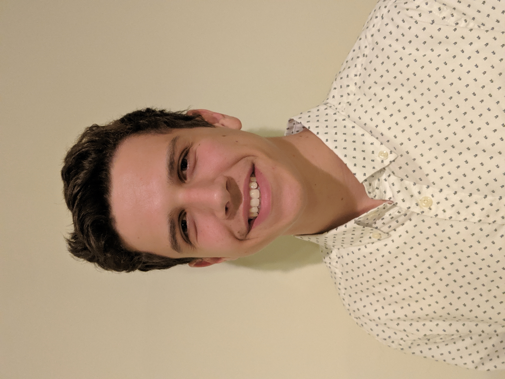

Thomas Dourgarian
824 Promontory Place
Eagan, Minnesota
Work Experience
myVcom, Junior Software Developer
May 2019 - present
- Working in a team-based development environment using javascript with a Meteor.js framework to develope new software for temp agencies
- Collaborating, in person, with a professional grade digital marketing agency creating the road-map for myVcom and designing the system's UI
- Working both front and back end to create innovative features while maintaining a seamless user experience
Dunn Brothers, Barista
June 2015 - June 2016
- Multi-tasking drive-thru and drink making during peak rush hours while preserving the high level quality of our products.
- Building a maintaining positive relationships with customers as to provide the highest quality experience for them
- Upheld cafe cleanliness as to uphold our expected signature coffee shop atmosphere
Education
2018-2019 - University of Minnesota, Twin Cities College of Liberal Arts
GPA - 3.33
2013-2017 - Trinity School at River Ridge, Eagan MN
GPA - 3.70
Programming Skills
- Java
- Javascript
- Python
- Meteor.js
- HTML
- css